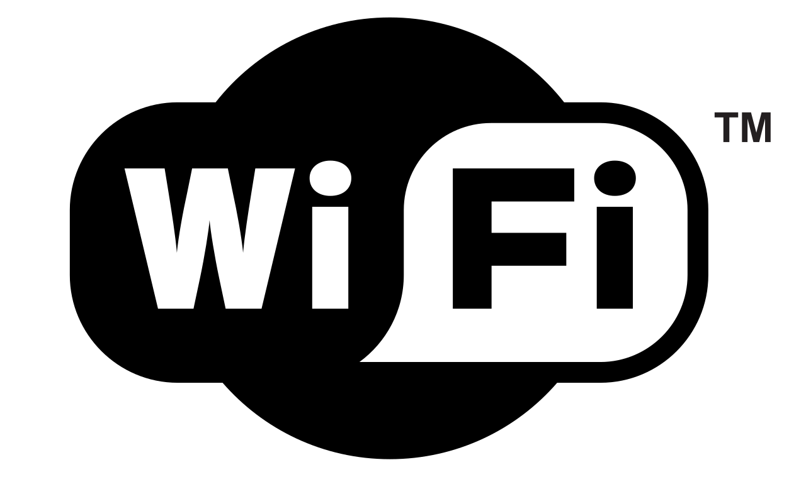

SGML: Lenguaje de Anotaciones Generales. Lenguaje del que deriva el HTML.

Software: Programas escritos en un lenguaje que la computadora entiende y puede ejecutar para realizar una tarea.
Navegador: Programa utilizado para acceder a los documentos almacenados en Internet.
Networking: se usa habitualmente en el mundo de los negocios para hacer referencia a una actividad
socioeconómica en la que profesionales y emprendedores se reúnen o contactan para formar relaciones empresariales,
crear y desarrollar oportunidades de negocio, compartir información y buscar clientes potenciales.
Online: Equipos o dispositivos que están en comunicación directa o encendidos
Offline: Equipos o dispositivos que no están en comunicación directa o apagados.
Pendrive: Dispositivo de almacenamiento de datos que incorpora una interfaz USB para conectar a un
puerto USB.
PNG: Gráficos Portables de Red. Formato gráfico muy completo especialmente pensado para redes.
QR (Código QR): Sistema para almacenar información en una matriz de puntos o un código de barras
bidimensional creado por la compañía japonesa Denso Wave, subsidiaria de Toyota, en 1994.
Se caracteriza por los tres cuadrados que se encuentran en las esquinas y que permiten detectar
la posición del código al lector.
RAM: Memoria primaria de una computadora. En las PCs es accesible por el procesador a través del
puente norte del chipset.
ROM: Memoria de sólo lectura. Almacenamiento cuyo contenido no puede cambiarse por el usuario.
Generalmente contiene programas o datos no alterables.
Servidor: Computadora o programa que proporciona recursos en una red dando información a los
clientes.
SGML: Lenguaje de Anotaciones Generales. Lenguaje del que deriva el HTML.
Software: Programas escritos en un lenguaje que la computadora entiende y puede ejecutar para realizar
una tarea.
TIC (Tecnologías de la Información y la Comunicación): Software, computadoras y otros dispositivos electrónicos para procesar, almacenar, transmitir
y recuperar información.
Troyano: Se denomina troyano a un programa destructivo que se encubre bajo la forma de una aplicación
inofensiva. A diferencia de los virus, los troyanos no son capaces de reproducirse por sí mismos,
pero pueden ser igualmente maliciosos.
URL (Uniform Resource Locator): Localizador uniforme de recursos. Estándar que especifica un tipo de servicio en Internet, así
como la localización exacta del archivo correspondiente. Dirección de un sitio web, universal
y único a nivel mundial.
UDP (User Datagram Protocol): Protocolo de Datagrama de Usuario. Protocolo abierto en el que el usuario (programador) define su propio tipo de paquete.
Virus: Un virus informático es un programa de ordenador que puede infectar otros programas
modificándolos, para incluir una copia de si mismo. Los virus pueden destruir intencionadamente
datos en la computadora, aunque también existen otros más benignos, que se caracterizan
solo, por las molestias que ocasionan.
Virtual: Se dice de la representación en una computadora de algo que no existe, o no está presente
en ese lugar.
WAN (Wide Area Network): Red de Área Extensa.
Wi-FI: Mecanismo de conexión de dispositivos electrónicos de forma inalámbrica. Los dispositivos
habilitados con Wi-Fi (ordenadores, teléfonos smartphone, consolas de videojuegos, tabletas,
etc.) pueden conectarse a Internet a través de un punto de acceso de red inalámbrica.

WLAN (Wireless Local Area Network): Red de área local inalámbrica.
xDSL (Digital Suscriber Line): Línea digital de abonado. Es el término con el que nos referimos de forma global a todas las
tecnologías que proveen una conexión a una red con más velocidad a través de las líneas
telefónicas: ADSL, IDSL, HDSL, SHDSL, etc.
XML (eXtensible Markup Language): El lenguaje XML, (en español, lenguaje de marcado extensible). Un lenguaje basado en etiquetas,
diseñado específicamente para proporcionar información en las páginas Web. XML no es más
que un conjunto de reglas para definir etiquetas semánticas que nos organizan un documento
en diferentes partes.
yottabyte (YB): Unidad de medida de la capacidad de memoria o del tamaño de los datos equivalente a 1024 zettabytes (2 80 bytes ).
Zip: Disco magnético removible que permite almacenar 100 ó 250 Mb de información, de gran
estabilidad y duración.

Zip Drive: Periférico de entrada/salida que maneja los discos Zip. Posee comando remoto y gran velocidad
de transferencia. Puede ser externo (interfaces: serie, paralelo, SCSI o USB) o interno (EIDE o
SCSI).